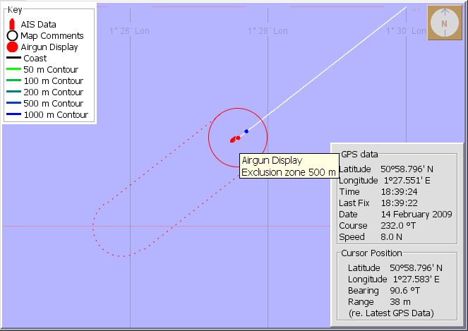

The airgun location will be displayed on the PAMGuard map. See
Map Overlays for
instructions on displaying overlays on the map.

If more than one set of airguns are in use on the same or on multiple vessels,
it is possible to configure multiple airgun display modules, each set up
with the correct source vessel identification and dimensions.
Multiple vessels and Airgun arrays during a wide azimuth seismic survey